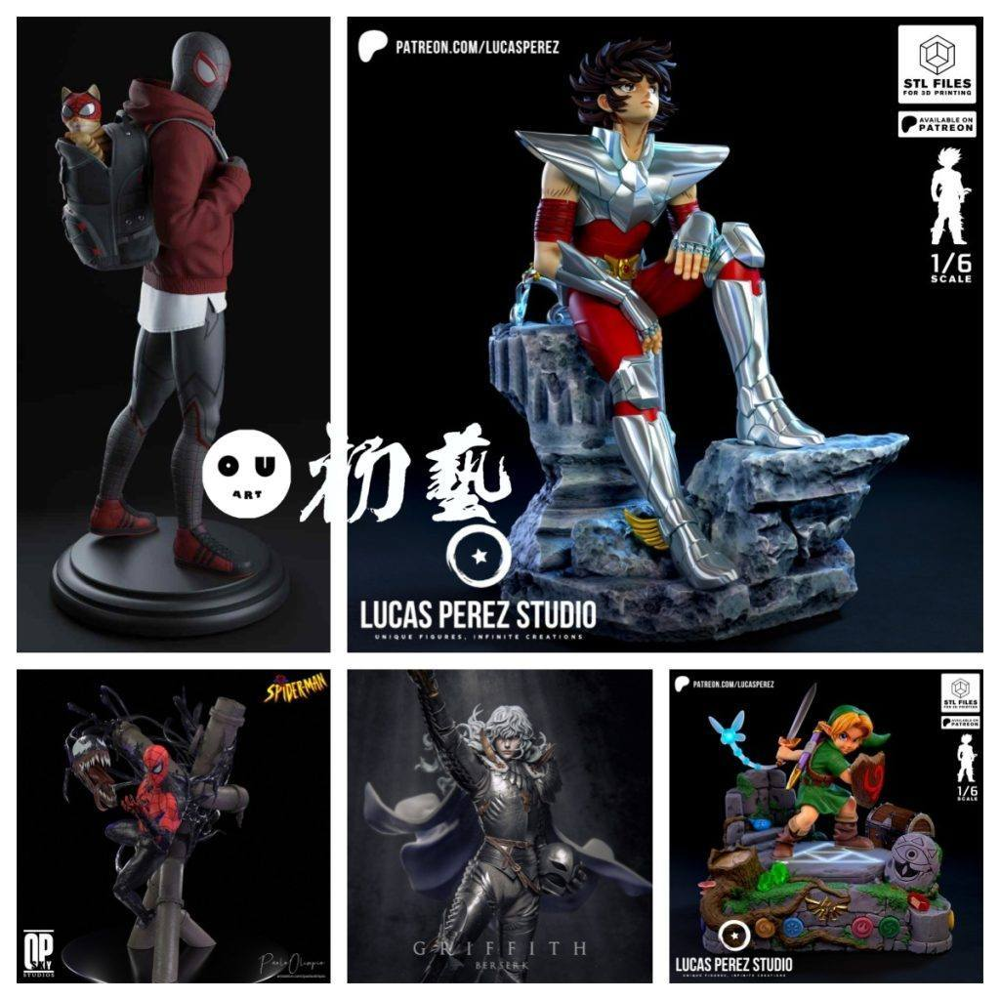
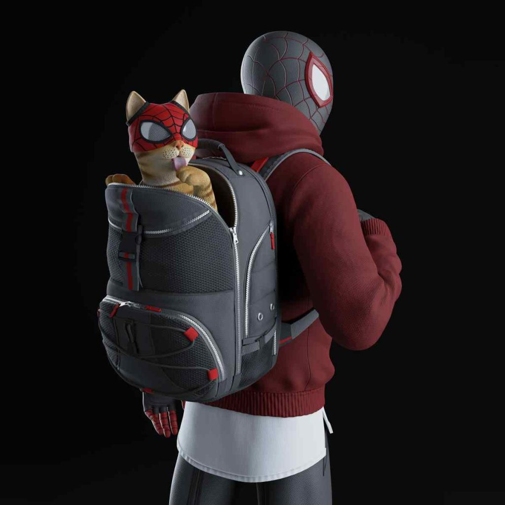
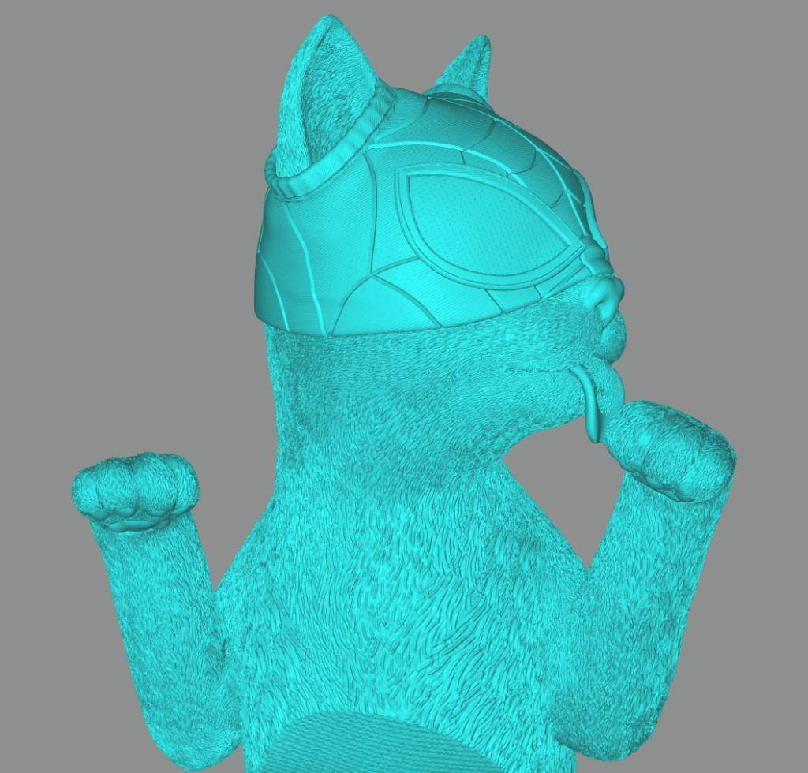
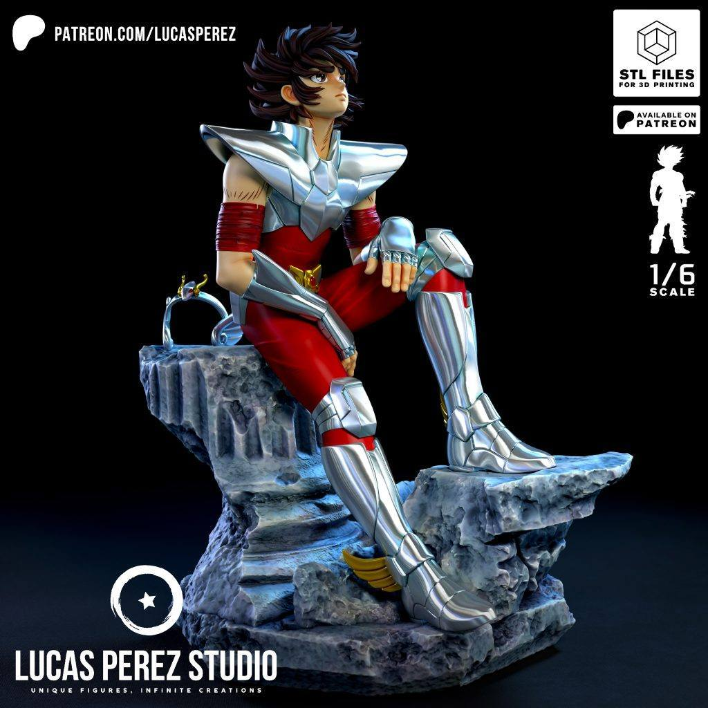
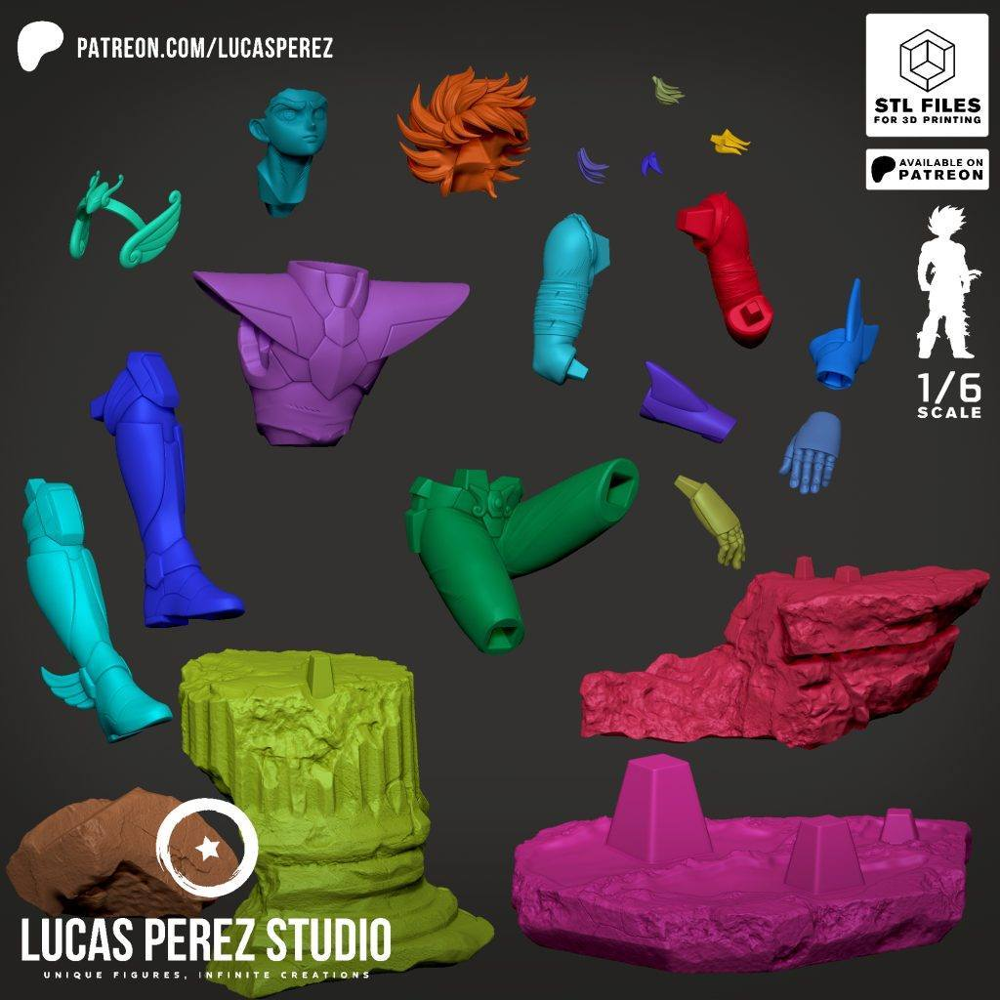
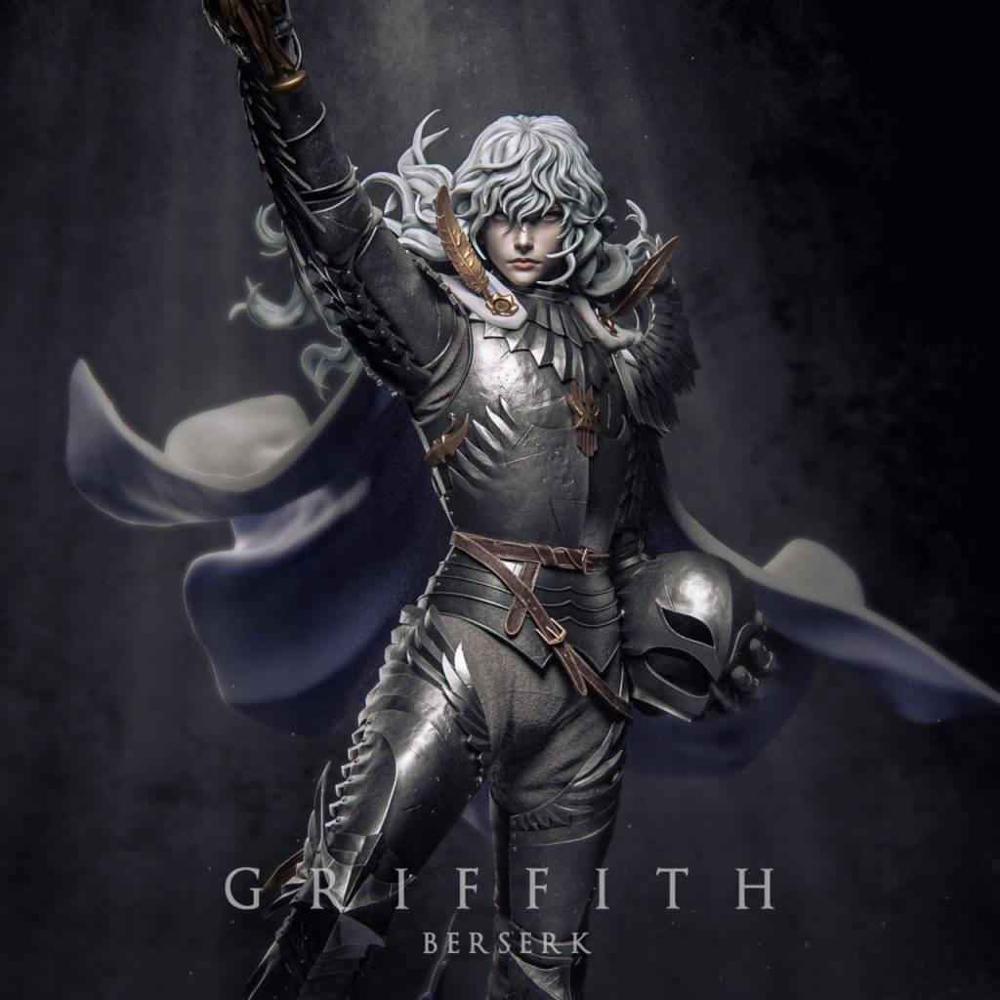
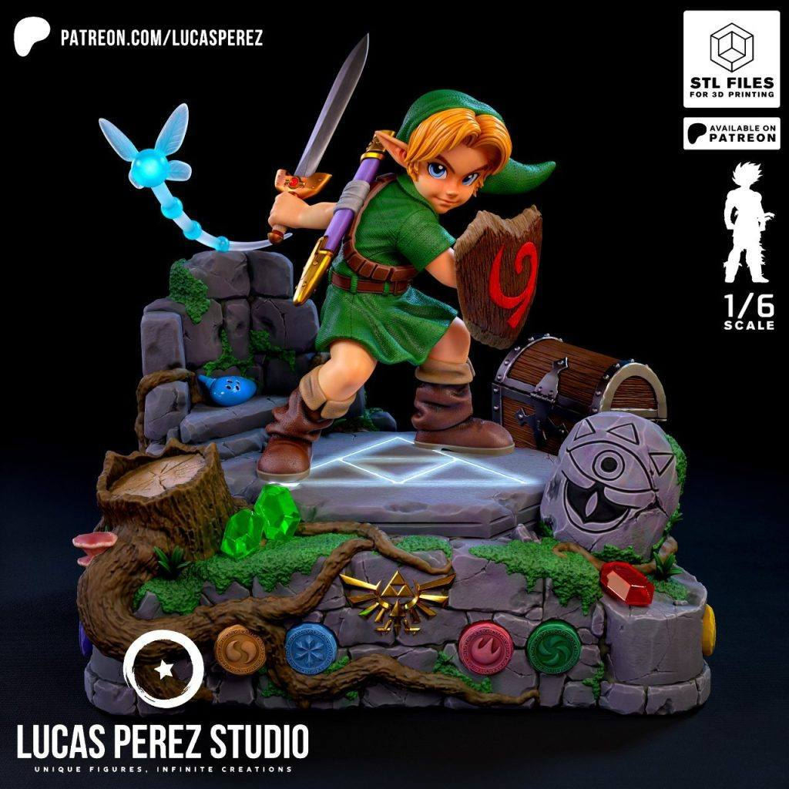
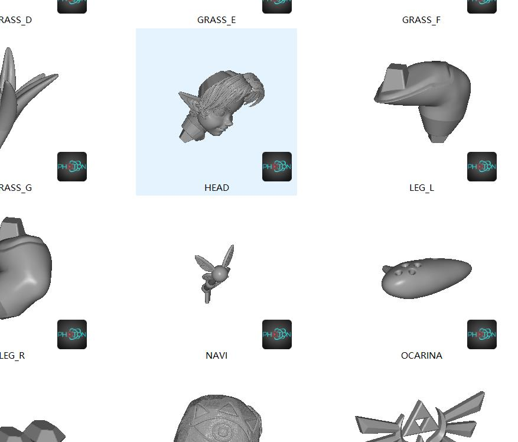

模型分享
10月24日STl图纸文件分享

1.蜘蛛侠——迈尔斯·莫拉莱斯，背着小猫的造型，蜘蛛侠2的游戏中对这个皮肤印象比较深，整体造型不错，细节好。
链接：https://pan.baidu.com/s/1NH4wJPAMKMoP9HJxkQKLcg
提取码：8vvg




2.圣斗士星矢，经典青铜造型，分件和细节优秀。
链接：https://pan.baidu.com/s/1EM6iXXhZ0EgdwN1xo__pfQ
提取码：znm2


3.蜘蛛侠和毒液，很特别的一组造型，动态设计的很好，可以学习一下。
链接：https://pan.baidu.com/s/1Id0lzui9K3my4g78WLPk4w
提取码：tp49

4.剑风传奇——格里菲斯，很帅的雕像，多尺寸可选，细节很好分件优秀。
链接：https://pan.baidu.com/s/1PdyarhV_h6F5B6a4lR0Qyg
提取码：6zh2

5.林克，微微Q版，场景加人物的造型，很不错的摆件。
链接：https://pan.baidu.com/s/1hE5jpZVBZ4yCdYVZN_zSdA
提取码：7arb


持续更新中。。。
以上内容仅供个人使用（非商用）
ONLY for PERSONAL (NON-COMMERCIAL) use.
加群获得更多免费模型！